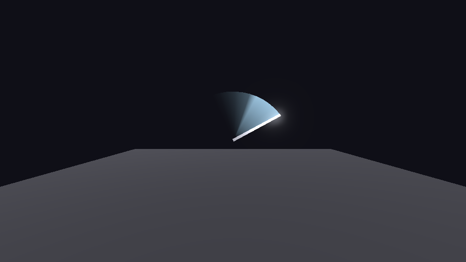
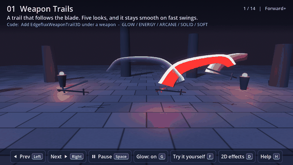
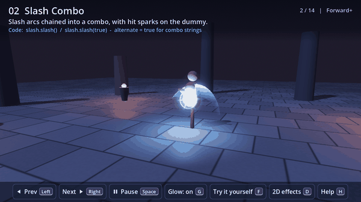

How to make a sword trail and slash effect in Godot 4
Short version: every frame, record where the base and the tip of the blade are in world space. Keep the last 120 ms of those pairs. Draw one triangle strip through them, base, tip, base, tip, with the alpha falling off with age, additive, both sides visible. That's a sword trail. Below is that in about 45 lines with no textures, then what to change for a smoother or two-tone trail and a trail that only shows on fast swings, and the places where a trail stops being enough and a slash begins.
The 45-line trail
Put two Marker3D nodes on the blade, one at the guard and one at the tip. Add a MeshInstance3D anywhere under the blade, attach this script, and point base_path and tip_path at the markers.

extends MeshInstance3D
## Sword trail: records the blade's base and tip every frame and draws a ribbon that fades with age.
@export var base_path: NodePath
@export var tip_path: NodePath
@export var life := 0.12
@export var color := Color(0.45, 0.75, 1.0)
var _samples: Array = [] # [base, tip, time]
var _imm := ImmediateMesh.new()
func _ready() -> void:
mesh = _imm
top_level = true # the ribbon lives in world space, not under the swinging blade
global_transform = Transform3D.IDENTITY
var m := StandardMaterial3D.new()
m.shading_mode = BaseMaterial3D.SHADING_MODE_UNSHADED
m.transparency = BaseMaterial3D.TRANSPARENCY_ALPHA
m.blend_mode = BaseMaterial3D.BLEND_MODE_ADD
m.cull_mode = BaseMaterial3D.CULL_DISABLED
m.vertex_color_use_as_albedo = true
material_override = m
func _process(_delta: float) -> void:
var now := Time.get_ticks_msec() * 0.001
var b := get_node(base_path) as Node3D
var t := get_node(tip_path) as Node3D
_samples.append([b.global_position, t.global_position, now])
while _samples.size() > 0 and now - _samples[0][2] > life:
_samples.pop_front()
_imm.clear_surfaces()
if _samples.size() < 2:
return
_imm.surface_begin(Mesh.PRIMITIVE_TRIANGLE_STRIP)
for s in _samples:
var a: float = 1.0 - (now - s[2]) / life
a = a * a * a
# Older samples fade, and the base of the blade is transparent so the ribbon reads as a crescent.
_imm.surface_set_color(Color(color.r, color.g, color.b, 0.0))
_imm.surface_add_vertex(s[0])
_imm.surface_set_color(Color(color.r, color.g, color.b, a))
_imm.surface_add_vertex(s[1])
_imm.surface_end()
Why it works
| Part | What it does |
|---|---|
top_level | The mesh ignores its parent's transform and sits at the world origin, so the world-space positions you feed it land where the blade was. Without this the ribbon swings along with the blade and collapses into a line. |
| Triangle strip, base then tip | Alternating base and tip vertices make a strip of quads with no index buffer and no extra bookkeeping. Each pair of samples is one quad. |
| Alpha from age, cubed | Linear fade looks like a wedge. Cubing it makes the tail drop off quickly and keeps the bright part close to the blade. |
| Transparent base, bright tip | The base vertex has alpha 0 and the tip carries the colour. The eye then reads a crescent at the tip rather than a solid fan, which is what a trail looks like in a fighting game. |
| Additive, no culling | Additive blending never darkens the character behind the trail, and with culling off the ribbon is visible from both sides of the swing. |
| Life of 120 ms | At 60 fps that's seven samples. Longer and the ribbon becomes a fan that sits in the air after the swing. Shorter and it's a flicker. |
Variations
Two-tone is two colours: give the tip vertex white and the base vertex the colour, and the edge of the arc burns hot. A trail that only appears on real swings is a speed gate: keep the previous tip position, and only append a sample when the tip moved faster than about 4 m/s, so idle sway and walking don't leave a ribbon. Smoothing matters at low frame rates, where seven samples turn the arc into a polygon. Run a Catmull-Rom spline through the base points and another through the tip points and emit four sub-points between each pair, and the arc goes round. In 2D the same idea is a Line2D with a width curve and a gradient, fed the tip positions.
Where it runs out
Frame-rate dependence. The ribbon is as smooth as the frame rate. At 30 fps it has half the samples, and on a frame hitch it gets a flat segment. Sampling in _physics_process at a fixed rate and interpolating is the fix, and it's where the simple script stops being simple.
A slash isn't a trail. The crescent that flashes when an anime character swings is its own shape, drawn with a mask that sweeps across an arc mesh over a tenth of a second, independent of the actual blade path, so it looks the same on every swing. A flying slash is that shape sent forward until it hits something.
Everything around the hit. The trail is the smallest part of a melee hit. Sparks at the contact point with the surface normal, a flash on a parry, the shield ripple when a strike lands on a barrier, and the ground crack on a slam are each their own effect with their own timing.
Or drop in a preset
The pack I sell for this, Sword Trail & Slash VFX for Godot 4 (EDGEFLUX), has weapon trails, slashes, thrusts, claws, flying slashes that stop on collision, hit sparks, parries, energy shields in four shapes, ground slams, charge-ups and dashes. 11 3D effects and 5 2D effects, 33 presets and 8 colour palettes, all generated from shaders and typed GDScript with no textures. The trail node has the speed gate built in. Nothing reads the depth or screen texture and nothing uses GPU particle trails or compute shaders, so it draws the same on Forward+, Mobile and Compatibility, Web included. Tested on Godot 4.4.1 and 4.7.2.

# A sword trail: add EdgefluxWeaponTrail3D as a child of the blade and set the two offsets.
$Sword/WeaponTrail.base_offset = Vector3(0, 0.2, 0)
$Sword/WeaponTrail.tip_offset = Vector3(0, 1.1, 0)
$Sword/WeaponTrail.auto_emit_speed = 4.0 # only draws while the blade moves fast
# One-shot effects: keep a node around and call it...
$Slash.slash() # or slash(true) to sweep the other way
$Hit.hit(point, normal)
$Shield.hit(point)
# ...or spawn a preset that frees itself when done.
const CRIT := preload("res://addons/edgeflux_fx/presets/3d/hit_critical_gold.tscn")
Edgeflux.hit(CRIT, get_tree().current_scene, point, normal)

There's a free version with three 3D effects and three presets, so you can check the look and the setup in your own project first. The full pack's itch page has a browser demo of every preset.